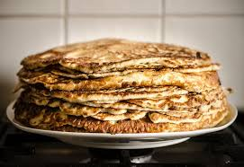

Pannkakor

Ingredienser
- 3 dl Vetemjöl
- 6 dl Mjölk
- 3 Ägg
- 1/2 tsk Salt
- 2 msk Smör
Instruktioner
- Vispa ut mjölet i hälften av mjölken till en slät smet.
- Vispa i resterande mjölk, ägg och salt. Låt smeten svälla ca 10 min.
- Smält smör i en stekpanna och häll ner i smeten.
- Grädda tunna pannkakor.
User Comments